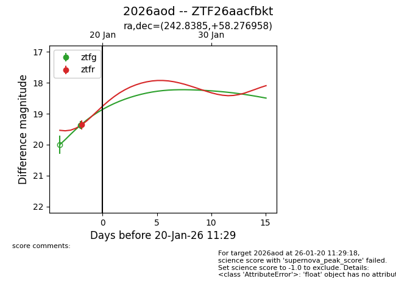
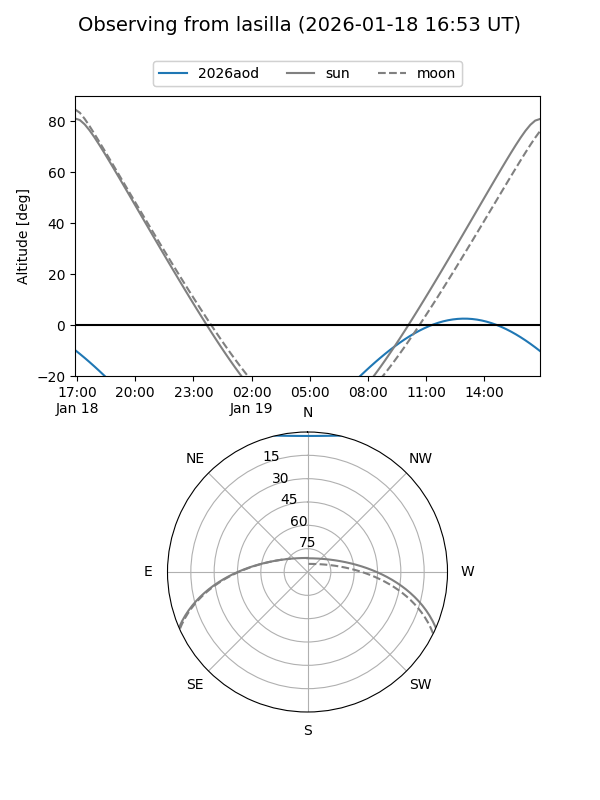
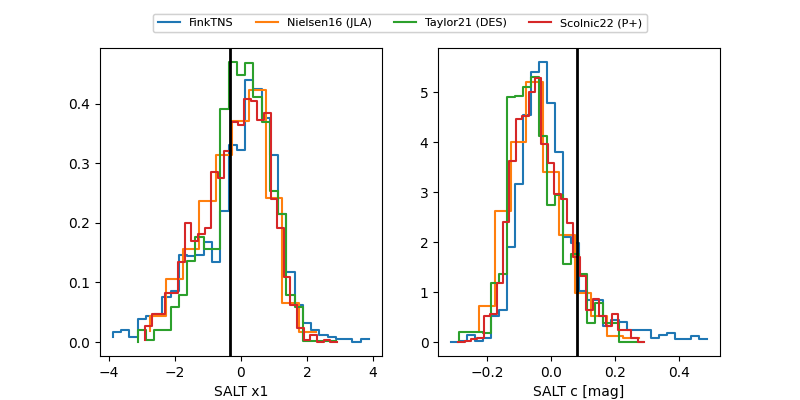

2026aod
Target 2026aod at 2026-01-22 11:36
Aliases and brokers:
FINK: link
Lasair: link
ALeRCE: link
TNS: link
YSE: link
alt names
ZTF26aacfbkt (ztf,fink_ztf)
2026aod (tns,yse)
Coordinates:
equatorial (ra, dec) = 242.8385,+58.27696
equatorial (HMS+DMS) = 16:11:21.23,+58:16:37.05
galactic (l, b) = (89.1906,+43.53481)
Flags:
Photometry:
last ztfg=19.07, ztfr=19.06
2 ztfg, 2 ztfr detections
Lightcurve

Visibility


Additional plots
